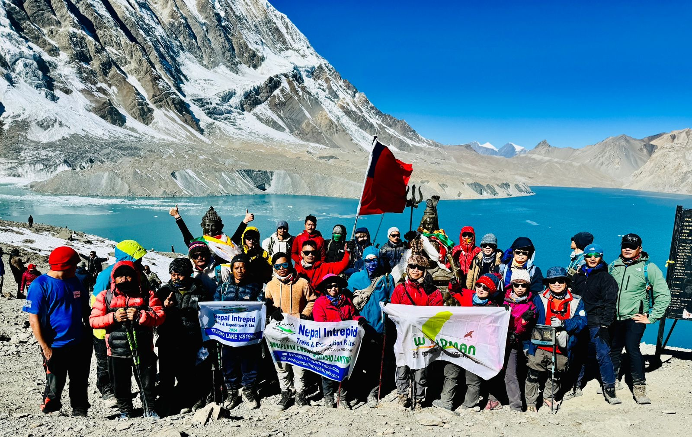
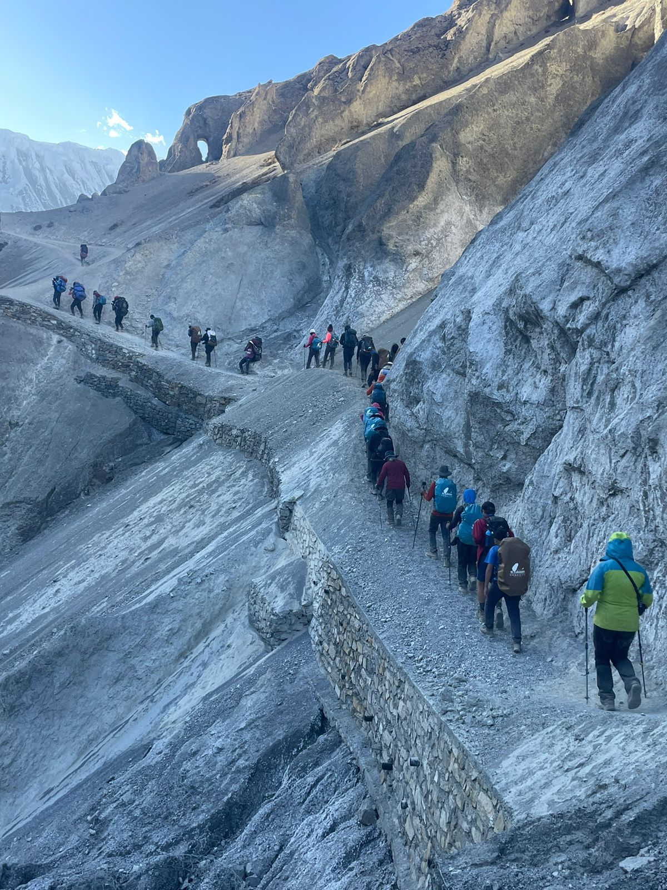
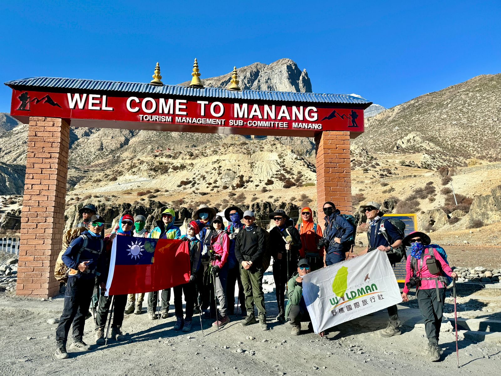
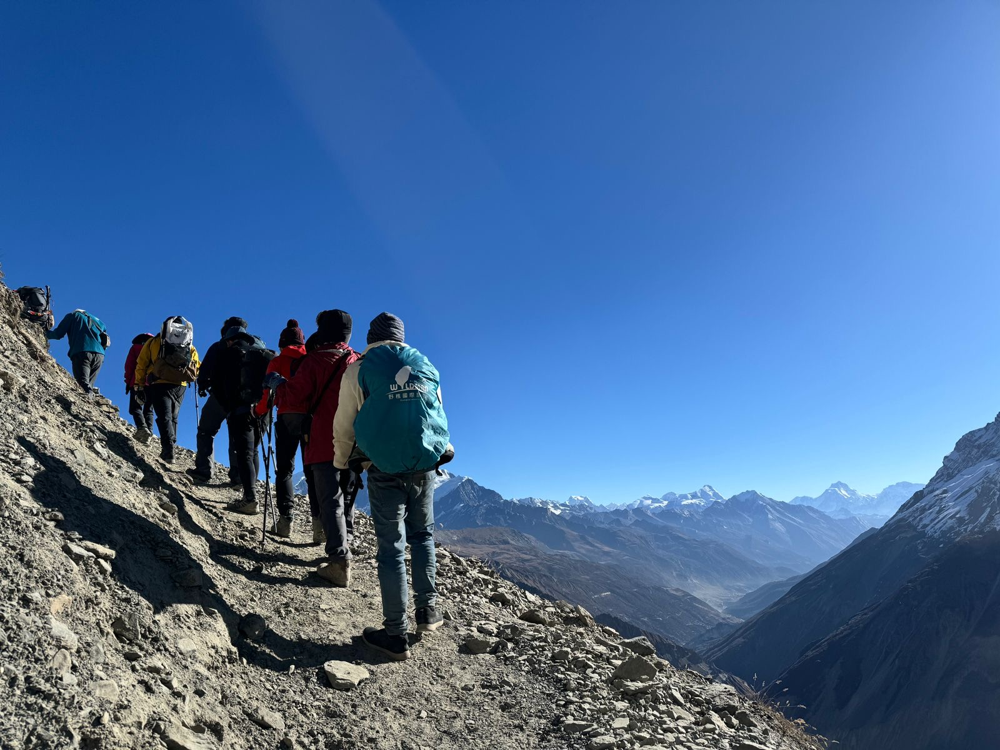
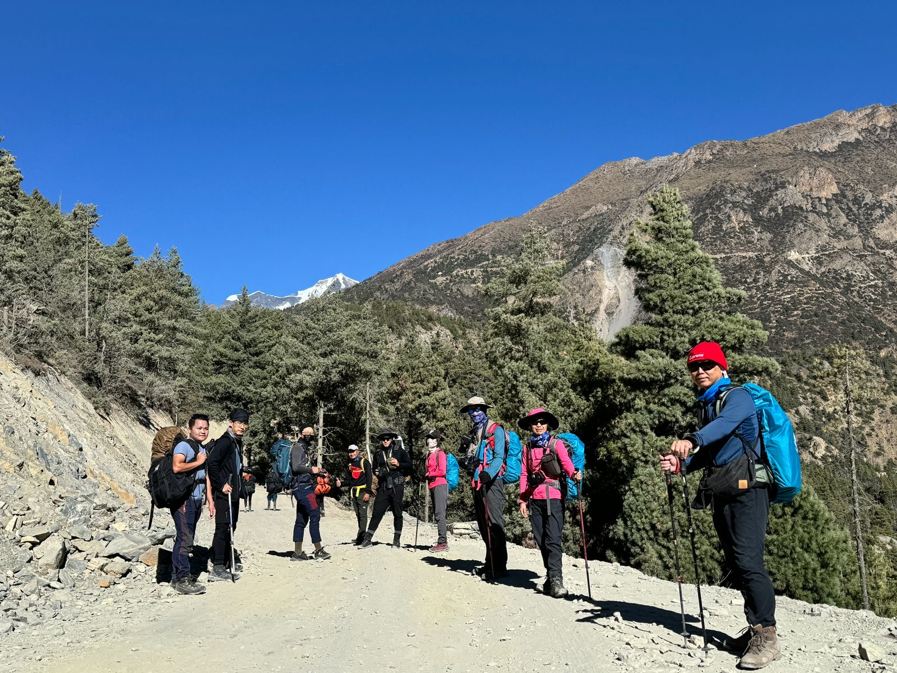

Our Everest Base Camp trek with Namaste Hiking Trek went beyond every expectation we had. What first pulled us towards them was their strict safety protocol and personal care. From the landing at Lukla to reaching Everest Base Camp (5,364m) and Kala Patthar, Sagar and the team made sure we were comfortable, safe, and hydrated every single day!
Annapurna Region • Classic Himalayan Circuit
5.0
reviews on TripAdvisor
5.0
169 reviews on Google
Annapurna Circuit Trek
The Annapurna Circuit Trek is one of Nepal's most geographically diverse long-distance trekking journeys. Circumnavigating the Annapurna massif, linking the Marsyangdi Valley with the Kali Gandaki Valley, crossing Thorong La Pass at 5,416 m (17,769 ft), and journeying through Manang, Muktinath, Kagbeni, Marpha, Tatopani, and Poon Hill.

Travelers' Choice
Best of the Best 2026




Key Trip Facts
Duration
16 days
Difficulty
Challenging
Max Altitude
5,416 m (Thorong La)
Destination
Annapurna & Mustang
Group Size
2-12 Persons
Accommodation
Teahouses & City Hotels
Transport
Private 4WD, Coach & Flight
Meals
Full Board on Trek (B.L.D.)
Season
Sep-Nov & Mar-May
Trek Starts
Chame (~2,710 m)
Trek End At
Nayapul / Pokhara (~900 m)
Trek Region
Annapurna Conservation Area
Package Start Point
Kathmandu
Package End Point
Kathmandu
Annapurna Circuit Trek Overview
The Annapurna Circuit Trek is one of Nepal's most geographically diverse long-distance trekking journeys. Instead of following one valley toward a single mountain objective and returning along the same route, the circuit travels around the entire Annapurna massif, linking the lush Marsyangdi Valley in the east with the arid Kali Gandaki Valley in the west. Along the way, trekkers move through subtropical foothills, terraced farmland, pine and rhododendron forests, high-altitude settlements, alpine terrain, the rain-shadow desert of Manang and Mustang, historic trading villages, major pilgrimage sites, and some of the most recognizable mountain viewpoints in the Nepal Himalaya.
The classic route crosses Thorong La Pass at 5,416 m (17,769 ft), making the pass the highest point and physical climax of the standard circuit. The Nepal Tourism Board describes the Annapurna Circuit as a major trekking route that progresses from subtropical conditions toward the trans-Himalayan environment of Manang and Mustang, crosses Thorong La, and follows the Kali Gandaki corridor between the 8,000-meter giants of Annapurna I (8,091 m) and Dhaulagiri (8,167 m).
For many trekkers, the defining feature of the Annapurna Circuit is not simply the altitude—it is the extraordinary sequence of change. You begin the journey in a warm river valley surrounded by crops and dense vegetation, spend several days climbing through increasingly cooler forests, reach the dry high-altitude world of Manang, cross a 5,416-meter pass, and then descend into the trans-Himalayan landscape of Mustang. Later, the route drops into warmer conditions again before climbing through rhododendron forest toward Ghorepani and Poon Hill. That degree of environmental variation within a single trek gives the Annapurna Circuit a character that is difficult to reproduce anywhere else on earth.
Key Trip Facts at a Glance
| Duration | 16 calendar days, including Kathmandu arrival, sightseeing and departure |
| Main Walking Route | Jagat → Dharapani → Chame → Upper Pisang → Ghyaru/Ngawal → Manang → Yak Kharka → Thorong La → Muktinath |
| Gorge & Mountain Flight | Muktinath → Kagbeni → Jomsom (Day 13 scenic flight to Pokhara) → Fewa Lake relaxation |
| Highest Point | Thorong La Pass (5,416 m / 17,769 ft); Day 11 daytime crossing |
| Acclimatization | Day 2 (Kathmandu UNESCO heritage) & Day 8 (Manang ~3,540 m Gangapurna hike & HRA clinic) |
| Pre-pass Overnight | Thorong Phedi (~4,450 m), or individually assessed High Camp (~4,925 m) on Day 10 |
| Travel Style | Complete classic circuit; overland drive to Jagat, continuous foot trekking, domestic scenic flight Jomsom to Pokhara, and Kathmandu buffer day |
| Return Journey | Jomsom flight to Pokhara on Day 13; overland drive to Kathmandu on Day 14; buffer day on Day 15; international departure on Day 16 |
| Price Reference | USD $1,199 per person (2026/27 seasonal quotation) |
What is the Annapurna Circuit Trek?
The Annapurna Circuit is a counterclockwise trekking route that circumnavigates the entire Annapurna massif and crosses the high Himalayan watershed at Thorong La before descending through the Kali Gandaki Valley. A traditional sequence begins around Besisahar, follows the Marsyangdi River upstream, reaches Chame, continues toward Pisang and Manang, climbs through Yak Kharka toward Thorong Phedi, crosses Thorong La (5,416 m), and then descends through Muktinath, Kagbeni, and Jomsom. The journey continues through Marpha, Tukuche, Ghasa, and Tatopani before climbing through lush forests to Ghorepani and Poon Hill, eventually reaching the Pokhara lakeside.
This counterclockwise direction is vital because the circuit's highest terrain is approached progressively rather than immediately. Manang becomes the pivotal acclimatization staging point before the trek pushes above 4,000 meters. The route creates an authentic sense of geographical progression: you are not merely walking toward a single viewpoint, but traveling around an entire mountain kingdom and repeatedly entering new valleys, settlements, and ecological zones.
Where is the Annapurna Circuit Located?
The Annapurna Circuit is located in north-central Nepal within the Annapurna Conservation Area (ACAP), the country's largest protected biodiversity zone. The region spans an extraordinary range of elevations, from subtropical river valleys below 1,000 m to glacial summits exceeding 8,000 m.
The southern valleys receive substantial monsoon moisture and support dense vegetation and terraced farming. As the trail climbs northward past the Annapurna barrier, the landscape enters a dramatic rain shadow. Manang and Mustang feature stark, rocky, semi-arid terrain closely resembling the Tibetan plateau. After crossing Thorong La, the trail enters the trans-Himalayan desert of Mustang before following the Kali Gandaki south into green temperate forests and subtropical orchards around Tatopani.
Annapurna Circuit Trek Highlights
Cross Thorong La Pass (5,416 m)
Reach the highest point and physical pinnacle of the Annapurna Circuit. Stand among fluttering prayer flags overlooking a vast panorama of Annapurna and Dhaulagiri peaks.
Sacred Muktinath Pilgrimage (~3,800 m)
Visit one of the Himalaya's most sacred sites, revered by both Hindus and Buddhists. Witness the 108 sacred water spouts, eternal natural gas flame, and ancient Buddhist gompas.
World's Deepest Kali Gandaki Gorge
Walk through the dramatic canyon flanked by Dhaulagiri (8,167 m) to the west and Annapurna I (8,091 m) to the east—a vertical relief of over 5,500 meters.
Sunrise over Poon Hill (3,210 m)
Catch the golden sunrise over Dhaulagiri, Annapurna I, Annapurna South, and Machhapuchhre (Fishtail)—the perfect photographic conclusion to your circuit.
High-Altitude Cultural Hub of Manang (~3,500 m)
Spend an essential acclimatization day exploring stone alleyways, Praken Gompa, Gangapurna glacial lake, and ancient Tibetan-Buddhist monasteries.
High Ridge Route via Ghyaru & Ngawal
Traverse high cliffside paths above the Marsyangdi Valley with sweeping panoramic views of Annapurna II, III, and IV, passing medieval stone villages.
Natural Hot Springs at Tatopani (~1,190 m)
Soothe your trekking muscles in the natural thermal mineral pools on the banks of the Kali Gandaki River after descending from the high pass.
Thakali Culture & Marpha Apple Orchards
Walk through pristine whitewashed alleys, taste fresh Himalayan apple cider and pies, and experience famous Thakali hospitality along the historic salt route.
More Than a Mountain Trek: Culture & History
The Annapurna Circuit is often marketed for its dramatic mountain views, but the route's deeper significance lies in the interaction between geography, people, and centuries of history:
- Gurung and Middle-Hill Communities: Terraced agriculture, stone slate architecture, and vibrant community life in the lower Marsyangdi Valley.
- Manang Trading Heritage: Centuries-old Tibetan-influenced stone architecture, high pastures, gompas, and traditional salt trade networks.
- Muktinath Sacred Confluence: A holy pilgrimage hub where Hindu Vaishnavite devotion and Tibetan Buddhist traditions harmoniously converge.
- Historic Kali Gandaki Salt Corridor: The ancient trade artery connecting the Tibetan plateau with the Indian subcontinent.
- Thakali Mountain Hospitality: Renowned culinary traditions, immaculate lodges, and rich merchant culture in Marpha and Tukuche.
Planning your Annapurna Circuit Trek?
Speak directly with our certified Himalayan route planners for custom dates, road condition updates, and group discounts.
Annapurna Circuit Trek 16 Days Itinerary
Our comprehensive 16-day Annapurna Circuit itinerary follows a proven, medically sound acclimatization progression. Featuring Kathmandu UNESCO heritage exploration, a scenic drive to Jagat, gentle pedestrian trekking through the lower subtropical gorge to Chame, the high balcony route via Ghyaru and Ngawal, crucial acclimatization in Manang, a triumphant crossing of Thorong La Pass (5,416 m), exploration of sacred Muktinath and medieval Kagbeni, an aerial mountain flight through the Kali Gandaki gorge from Jomsom to Pokhara, and a built-in Kathmandu contingency buffer day.
Day 1: Welcome to Kathmandu & Trek Preparation
Kathmandu – 1,300 m / 4,265 ft
Hiking / Travel: 20 to 30 mins private airport transfer
Lodging: 3-Star Hotel in Kathmandu (Thamel)
Meals: Welcome Dinner
Highlight: Airport pickup, equipment check & comprehensive trek briefing
Your Annapurna Circuit journey begins in Kathmandu, the cultural and logistical center of Nepal. After arriving at Tribhuvan International Airport (TIA), you are greeted by our airport representative with traditional marigold garlands and transferred in a private vehicle to your hotel in Thamel.
The Thamel district offers convenient access to trekking gear shops, currency exchanges, and bakeries. In the late afternoon, your senior trekking guide conducts a comprehensive pre-trek orientation covering route geography, weather forecasts, safety protocols, and daily routines. We conduct a thorough gear inspection—checking boots, down layers, sleeping bags, and personal medical supplies. In the evening, enjoy an authentic welcome dinner introducing you to flavorful Nepali cuisine.
Day 2: Cultural Sightseeing in Kathmandu Valley & Final Trek Preparation
Kathmandu – 1,300 m / 4,265 ft
Activity: 5 to 6 hours guided cultural tour by private vehicle
Lodging: 3-Star Hotel in Kathmandu (Thamel)
Meals: Breakfast included
Highlight: Swayambhunath (Monkey Temple), Pashupatinath Temple & Kathmandu Durbar Square
Dedicate today to discovering the ancient living history of the Kathmandu Valley, home to seven UNESCO World Heritage zones. Accompanied by a licensed cultural guide and private driver, visit Swayambhunath Stupa (the 'Monkey Temple'), perched atop a hill commanding panoramic 360-degree vistas of the city basin.
Proceed to the sacred Hindu shrine of Pashupatinath along the holy Bagmati River, witnessing centuries-old spiritual traditions and open-air cremation ceremonies. Later, explore the courtyards, pagoda temples, and carved wooden architecture of Kathmandu Durbar Square. Return to Thamel for any last-minute gear rentals (down jackets, trekking poles) while our operations team finalizes your Annapurna Conservation Area Project (ACAP) and TIMS permits.
Day 3: Scenic Overland Drive from Kathmandu to Jagat via Besisahar
Jagat – 1,300 m / 4,265 ft (Besisahar 760 m)
Hiking / Travel: 7 to 8 hours scenic overland drive (~210 km)
Lodging: Mountain Teahouse in Jagat
Meals: Breakfast, Lunch & Dinner
Highlight: Trishuli & Marsyangdi River valleys, terraced foothills & Syange waterfalls
Depart Kathmandu early in the morning by private vehicle, descending from the Kathmandu Valley rim along the winding Prithvi Highway. The route follows the roaring Trishuli River past lush green terraced hills, riverside towns, and suspension bridges, before branching north toward Besisahar along the Marsyangdi River basin.
At Besisahar, the administrative hub of Lamjung district, we switch to a sturdy 4WD mountain vehicle to navigate the rugged dirt road into the Marsyangdi gorge. Pass plunging waterfalls at Syange and dramatic canyon cliffs before arriving at the stone-paved village of Jagat (1,300 m). Enjoy your first evening in a mountain teahouse nestled between steep canyon walls.
Day 4: Trek from Jagat to Dharapani via Tal
Dharapani – 1,860 m / 6,102 ft (Tal 1,700 m)
Hiking / Travel: 5 to 6 hours walking, ~15 km
Lodging: Mountain Teahouse in Dharapani
Meals: Breakfast, Lunch & Dinner
Highlight: Chamje suspension bridge, dramatic Tal lakebed valley & entering Manang district
Lace up your hiking boots for the first true walking day of the circuit. The trail descends to the riverbed before climbing through bamboo and rhododendron groves toward the settlement of Chamje. Cross a high suspension bridge swaying over the thundering Marsyangdi River and ascend a steep stone staircase hewn directly into the rock face.
Cresting the pass, you enter the Manang district at Tal (1,700 m)—a breathtaking wide valley floor formed by an ancient dammed lakebed, framed by cascading vertical waterfalls. After lunch by the riverbanks in Tal, follow the canyon trail past mani prayer stones and through small Gurung hamlets to Dharapani (1,860 m), the major junction where the Manaslu Circuit joins the Annapurna Circuit.
Day 5: Trek from Dharapani to Chame
Chame – 2,670 m / 8,760 ft
Hiking / Travel: 5 to 6 hours walking, ~15.5 km
Lodging: Mountain Teahouse in Chame
Meals: Breakfast, Lunch & Dinner
Highlight: Bagarchhap gompa, pine forests of Timang, views of Mt. Manaslu (8,163 m) & Annapurna II
Leaving Dharapani, the path winds through Bagarchhap—a traditional village adorned with Tibetan-style prayer flags and flat-roofed stone houses. Continue climbing through dense pine and fir forests toward Danakye, then tackle the sustained switchbacks leading up to Timang (2,270 m).
Timang rewards your effort with breathtaking panoramas of Mt. Manaslu (8,163 m) and Peak 29 dominating the eastern skyline. Continue along a tranquil forested trail through Thanchok and Koto, the checkpoint entrance to the restricted Nar-Phu Valley. A gentle walk brings you to Chame (2,670 m), the bustling administrative capital of Manang district, offering hot spring baths, mountain gear shops, and dramatic views of Annapurna II towering directly above.
Day 6: Trek from Chame to Upper Pisang
Upper Pisang – 3,300 m / 10,826 ft (Lower Pisang 3,200 m)
Hiking / Travel: 5 to 6 hours walking, ~14 km
Lodging: Mountain Teahouse in Upper Pisang
Meals: Breakfast, Lunch & Dinner
Highlight: 1,500m curved Paungda Danda rock face ('Gateway to Heaven') & Tibetan-style Upper Pisang village
Today you cross the ecological threshold from humid subtropical forest into the arid alpine rain shadow of the northern Himalayas. The morning trail passes through fragrant pine and spruce forests, crossing the Marsyangdi River back and forth over steel suspension bridges.
At Dhikur Pokhari, emerge into an expansive mountain amphitheater dominated by Paungda Danda—a colossal 1,500-meter smooth granite slab curving skyward, venerated by locals as the 'Swarga Dwar' (Gateway to Heaven) through which departed souls ascend. Cross the river to ascend to Upper Pisang (3,300 m), an ancient stone village clinging to the hillside. Visit the ancient village gompa in the late afternoon for sweeping sunset vistas of Annapurna II and Annapurna IV.
Day 7: Trek from Upper Pisang to Manang via High Route (Ghyaru & Ngawal)
Manang – 3,540 m / 11,614 ft (Ghyaru 3,670 m, Ngawal 3,660 m)
Hiking / Travel: 6 to 7 hours walking, ~19 km
Lodging: Mountain Teahouse in Manang
Meals: Breakfast, Lunch & Dinner
Highlight: High balcony trail via Ghyaru, 360° Annapurna amphitheater & 900-year-old Braga Gompa
Prepare for what many describe as the single most scenic day of walking on the entire Annapurna Circuit. Instead of following the lower road, take the high northern balcony trail. A steep, scenic zigzag climb ascends to the cliffside village of Ghyaru (3,670 m), where stone houses and prayer chortens overlook the entire upper Manang valley.
The trail contours along high alpine ridges to Ngawal (3,660 m), providing jaw-dropping, unobstructed views of Annapurna II, Annapurna III, Gangapurna, and Tilicho Peak. Descend to the valley floor at Mungji, then pause at Braga (3,450 m) to explore its 900-year-old monastery clinging dramatically to towering eroded clay cliffs. Continue 30 minutes further to Manang (3,540 m), the bustling cultural capital of the Nyeshang valley.
Day 8: Vital Acclimatization & Exploration Day in Manang
Manang – 3,540 m / 11,614 ft
Activity: 3 to 4 hours active acclimatization hike (up to ~3,900 m)
Lodging: Mountain Teahouse in Manang
Meals: Breakfast, Lunch & Dinner
Highlight: Glacial Gangapurna Lake, Chongkor viewpoint & Himalayan Rescue Association (HRA) clinic lecture
A dedicated acclimatization day in Manang is essential for physiological adaptation before ascending past 4,000 meters. Following the proven 'climb high, sleep low' principle, embark on a morning side hike to the turquoise Gangapurna Glacial Lake and climb the Chongkor ridge (3,850 m) for stunning close-ups of the Gangapurna Icefall and the Annapurna massif.
In the afternoon, explore Manang's narrow stone alleys, water-driven prayer wheels, and cozy bakeries. At 3:00 PM, attend the free educational presentation on Acute Mountain Sickness (AMS), prevention, and treatment conducted by volunteer Western physicians at the Himalayan Rescue Association (HRA) medical clinic.
Day 9: Trek from Manang to Yak Kharka
Yak Kharka – 4,050 m / 13,287 ft
Hiking / Travel: 4 to 5 hours walking, ~10.5 km
Lodging: High Alpine Lodge in Yak Kharka
Meals: Breakfast, Lunch & Dinner
Highlight: Leaving tree line for alpine tundra, grazing yaks & Himalayan blue sheep (bharal)
Leaving the fields of Manang, the trail heads northwest along the valley of the Jarsang Khola. Climb gently past the old stone hamlet of Tenki (3,650 m) and continue out of the main Marsyangdi Valley into open alpine grassland. The tall pine trees of the lower valleys now give way entirely to sparse juniper scrub, thorny berberis bushes, and rocky pastures.
Traverse past the settlement of Gunsang (3,950 m), stopping for warm mint tea with views of Annapurna III and Gangapurna. Watch for herds of Himalayan blue sheep (bharal) grazing on the steep scree slopes. Cross a wooden bridge over the river and pass ancient mani walls to arrive at Yak Kharka (4,050 m). With an elevation gain of ~510 m, we keep walking hours modest to maintain optimal acclimatization.
Day 10: Trek from Yak Kharka to Thorong Phedi or High Camp
Thorong Phedi – 4,450 m / 14,599 ft (High Camp ~4,925 m)
Hiking / Travel: 3 to 4 hours walking, ~7 km
Lodging: High Altitude Lodge in Thorong Phedi / High Camp
Meals: Breakfast, Lunch & Dinner
Highlight: Staging base beneath the massive wall of Thorong La, scree traverse & pre-pass briefing
Today's trek is short in distance but purposeful as you move to the final staging base for Thorong La Pass. Ascend gradually through alpine terrain to Ledar (4,200 m), then descend briefly to the rushing Jarsang Khola, crossing on a wooden suspension bridge.
The path then traverses high across a scree slope subject to rockfall, where our guide leads with careful vigilance. Reach Thorong Phedi (4,450 m), a busy cluster of lodges nestled directly at the foot of the pass. Depending on team fitness and group acclimatization, we may push an additional hour up the steep zig-zags to Thorong High Camp (4,925 m) to shorten tomorrow's climb. Enjoy an early carbohydrate-rich dinner and rest early for tomorrow's alpine start.
Day 11: Cross Thorong La Pass (5,416 m) & Descend to Sacred Muktinath
Thorong La (5,416 m) to Muktinath (3,800 m / 12,467 ft)
Hiking / Travel: 7 to 9 hours walking, ~16 km (+966 m ascent / -1,616 m descent)
Lodging: Mountain Teahouse in Muktinath
Meals: Breakfast, Lunch & Dinner
Highlight: Conquering Thorong La Pass (5,416 m / 17,769 ft), prayer flag summit & views into Mustang & Tibet
The defining physical climax of the Annapurna Circuit begins with a pre-dawn wake-up call at 4:00 AM. Setting out under brilliant starlight with headlamps glowing, ascend the steep, icy switchbacks toward the pass. The air is crisp and thin as the dawn light slowly illuminates the colossal snow-covered summits of the Annapurnas, Khatung Kang, and Yakwakang.
After 4 to 5 hours of steady, measured climbing, reach the summit of Thorong La Pass (5,416 m / 17,769 ft), festooned with thousands of colorful Buddhist prayer flags fluttering in the mountain breeze. Celebrate your achievement with hot tea at the highest tea shop in the world, gazing across into the dry trans-Himalayan landscapes of Mustang and Tibet. A sustained 1,600-meter descent brings you down to the sacred oasis of Muktinath (3,800 m), where hot showers and cozy beds await.
Day 12: Explore Muktinath Temple & Trek to Jomsom via Kagbeni
Jomsom – 2,720 m / 8,924 ft (Muktinath 3,800 m, Kagbeni 2,810 m)
Hiking / Travel: 5 to 6 hours walking, ~18 km
Lodging: Mountain Hotel in Jomsom
Meals: Breakfast, Lunch & Dinner
Highlight: 108 sacred Muktinath water spouts, medieval walled village of Kagbeni & Shaligram fossil hunting
Begin your morning with a visit to the revered pilgrimage sanctuary of Muktinath ('Place of Liberation'), sacred to both Hindus and Buddhists. Walk through peaceful temple grounds past 108 brass gargoyle water spouts and visit the Jwala Mai temple where natural subterranean gas burns with an eternal flame beside natural springs.
Begin descending through the wind-sculpted arid landscapes of Lower Mustang. Drop into the medieval mud-brick citadel of Kagbeni (2,810 m), the ancient gateway to the forbidden kingdom of Upper Mustang, exploring its narrow tunnels, centuries-old gompa, and mud chortens. After lunch, hike along the broad, gravelly riverbed of the Kali Gandaki Valley—searching for prehistoric ammonite fossils known as 'Shaligrams'—arriving in Jomsom (2,720 m), the bustling administrative and trading hub of the Thakali people.
Day 13: Scenic Mountain Flight from Jomsom to Pokhara & Lakeside Relaxation
Pokhara – 820 m / 2,690 ft
Hiking / Travel: 25 mins mountain flight + afternoon lakeside exploration
Lodging: 3-Star Hotel in Pokhara (Lakeside)
Meals: Breakfast included
Highlight: Flying through the deepest gorge on Earth between Annapurna I & Dhaulagiri, Fewa Lake boating
Board an exhilarating early-morning twin-otter mountain flight from Jomsom airport. In just 25 breathtaking minutes, your aircraft soars south through the Kali Gandaki gorge—the deepest valley on Earth—with the sheer 8,000-meter sheer ice walls of Annapurna I (8,091 m) on your left and Dhaulagiri (8,167 m) on your right, before descending into the warm, subtropical valley of Pokhara.
Transfer to your comfortable hotel in Lakeside Pokhara. Spend a leisurely afternoon boating on the calm waters of Fewa Lake to visit the island shrine of Tal Barahi Temple, with the iconic fish-tail summit of Machapuchare mirrored in the water. Stroll the vibrant cafes, enjoy an espresso, or treat yourself to a celebratory massage along the lakeside promenade.
Day 14: Scenic Overland Drive from Pokhara back to Kathmandu
Kathmandu – 1,300 m / 4,265 ft
Hiking / Travel: 5 to 6 hours scenic drive (~200 km)
Lodging: 3-Star Hotel in Kathmandu (Thamel)
Meals: Breakfast included
Highlight: Prithvi Highway road journey along the Marsyangdi and Trishuli river gorges
After a peaceful lakeside breakfast in Pokhara, board our private comfortable vehicle for the return journey to Kathmandu along the Prithvi Highway. The road winds eastward alongside the Marsyangdi and Trishuli rivers, tracing lush subtropical canyons, suspension bridges, and bustling roadside markets filled with fresh local produce.
Upon arrival in Kathmandu in the afternoon, check into your hotel in Thamel. Enjoy a hot shower and free time to relax, recharge, and explore the lively shops and cafes of Thamel at your own pace.
Day 15: Leisure & Buffer Contingency Day in Kathmandu
Kathmandu – 1,300 m / 4,265 ft
Activity: Flexible leisure day & flight safety buffer
Lodging: 3-Star Hotel in Kathmandu (Thamel)
Meals: Breakfast & Hosted Farewell Dinner
Highlight: Built-in weather buffer for Jomsom flights, Ayurvedic massage, Thamel shopping & celebratory dinner
This essential buffer day safeguards your travel schedule against potential weather-related flight delays out of Jomsom airport. With all trekking successfully completed, enjoy a relaxed, unstructured day in Kathmandu. Take time for last-minute souvenir shopping—seeking out authentic singing bowls, cashmere pashminas, hand-carved thangka paintings, and organic Himalayan tea.
Optional morning excursions can be arranged to the ancient Newari kingdom of Patan or the pottery squares of Bhaktapur. In the evening, Namaste Hiking Trek hosts a special farewell celebration dinner at a traditional Nepali restaurant with live folk music and cultural dances, celebrating your triumph over Thorong La Pass.
Day 16: Final Departure from Kathmandu (Farewell, Nepal!)
Kathmandu – 1,300 m / 4,265 ft
Hiking / Travel: 20 to 30 mins private airport transfer
Lodging: International Flight Departure
Meals: Breakfast included
Highlight: Private airport escort 3 hours prior to departure, heartfelt send-off & Subha Yatra
Your extraordinary 16-day Annapurna Circuit adventure concludes today. Enjoy your final breakfast overlooking the Kathmandu valley. Depending on your flight departure time, spend your remaining hours packing or taking a quiet final walk through the streets of Thamel.
Three hours prior to your scheduled flight, our private airport representative picks you up from the hotel and transfers you to Tribhuvan International Airport (TIA) for your return flight home. We bid you a warm farewell and 'Subha Yatra' (safe travels), trusting you carry home lifelong memories of the grand Annapurna Himalayas.
Why This 16-Day Circuit Sequence Works Best
1. Progressive Acclimatization Walking
Rather than enduring an exhausting 11-hour rough jeep ride directly to Chame (2,710m), driving to Jagat (1,300m) and trekking on foot through Tal and Dharapani gives your body 3 gentle days to adapt to mountain air.
2. Kathmandu UNESCO Heritage Exploration
Day 2 immerses you in the spiritual wonders of Swayambhunath (Monkey Temple), Pashupatinath, and Durbar Square while allowing our team to inspect all personal gear and validate your permits.
3. Mandatory Manang Rest & Side Hikes
Day 8 pauses sleeping altitude gain at 3,540m while allowing invigorating hikes to Gangapurna Lake and Chongkor ridge (~3,850m) alongside the official Himalayan Rescue Association (HRA) medical clinic lecture.
4. Spectacular Jomsom–Pokhara Mountain Flight
Flying from Jomsom to Pokhara provides an awe-inspiring aerial journey through the deepest gorge on Earth between Annapurna I (8,091m) and Dhaulagiri (8,167m), followed by a peaceful afternoon relaxing on Fewa Lake.
5. Built-in Kathmandu Contingency Buffer
Day 15 protects your international flight connections against adverse mountain weather delays out of Jomsom while offering relaxed souvenir shopping and an authentic Nepali farewell dinner.
What's Included & Excluded: Annapurna Circuit Trek
Transparency is our core principle. Here is the comprehensive breakdown of everything included in our 16-day Annapurna Circuit package and what personal expenses you should plan for.
What is Included
- Airport Transfers: Private arrival and departure transfers at Tribhuvan International Airport (TIA).
- City Hotels: 4 nights 3-star hotel in Kathmandu (Thamel) and 1 night 3-star hotel in Pokhara (Lakeside) on twin-sharing basis with breakfast.
- Mountain Lodges: 10 nights best available teahouses during the trek on twin-sharing basis.
- All Meals on Trek: Full board (Breakfast, Lunch, and Dinner) with hot tea or coffee during trekking days.
- Welcome & Farewell Dinners: Traditional Nepali dinners in Kathmandu with cultural music.
- Domestic Scheduled Flight: Scenic mountain flight ticket from Jomsom to Pokhara with airport departure taxes and transfers.
- Kathmandu UNESCO Heritage Tour: Guided cultural sightseeing of Swayambhunath (Monkey Temple), Pashupatinath, and Durbar Square by private vehicle with a licensed cultural guide.
- All Ground Transportation: Private overland 4WD vehicle Kathmandu to Jagat (via Besisahar), Pokhara hotel transfers, and scenic overland drive from Pokhara back to Kathmandu.
- Licensed Guide & Porters: Highly experienced English-speaking certified mountain guide and strong porters (1 porter per 2 trekkers, 15 kg max luggage).
- Permits & Fees: Annapurna Conservation Area Project (ACAP) entry permit and TIMS Card.
- Safety Equipment: Medical first aid kit and daily pulse oximeter blood oxygen saturation checks.
What is Excluded
- International Airfare: Flights to and from Kathmandu and international airport departure taxes.
- Nepal Tourist Visa: Available upon arrival at TIA ($30 for 15 days, $50 for 30 days).
- Travel & Rescue Insurance: Mandatory policy covering high-altitude trekking and emergency helicopter rescue up to 5,500 m.
- Personal Trekking Gear: Sleeping bag, down jacket, boots, trekking poles, and daypack (can be rented affordably in Kathmandu).
- Teahouse Extras: Hot showers ($2-$4), Wi-Fi ($2-$3), battery charging ($2-$3), and bottled mineral water.
- Beverages: Alcoholic drinks, soda, espresso coffees, and personal snack purchases.
- Tipping: Gratuities for trekking guides and porters (customarily $100–$150 per trekker total).
Annapurna Circuit Trek: Departure Dates & Availability
Join one of our guaranteed small-group departures (maximum 10 to 12 trekkers per group) or choose custom private dates tailored to your schedule. All departures include full ground transport, licensed mountain guides, porter service, permits, and teahouse accommodation.
| Start Date | End Date | Season / Weather | Price | Status | Action |
|---|---|---|---|---|---|
| 15 Mar 2026 | 28 Mar 2026 | Spring Rhododendron Bloom | $1,199 | Guaranteed | |
| 05 Apr 2026 | 18 Apr 2026 | Spring Peak Climbing Season | $1,199 | Guaranteed | |
| 25 Apr 2026 | 08 May 2026 | Late Spring Clear Skies | $1,199 | Available | |
| 18 Sep 2026 | 01 Oct 2026 | Early Autumn Crystal Clarity | $1,199 | Guaranteed | |
| 08 Oct 2026 | 21 Oct 2026 | Peak Autumn Dashain Festival | $1,199 | Filling Fast | |
| 28 Oct 2026 | 10 Nov 2026 | Peak Autumn Panorama | $1,199 | Guaranteed | |
| 14 Nov 2026 | 27 Nov 2026 | Late Autumn Crisp Skies | $1,199 | Available |
Annapurna Circuit Gear & Packing Checklist
Because the Annapurna Circuit transitions from warm subtropical valleys (25°C / 77°F) to sub-zero alpine conditions at Thorong La (-15°C / 5°F), a modular layering system is paramount. Porters carry up to 15 kg of main luggage in a duffel bag, while you carry a 25–35 liter daypack with daily essentials.
Headwear, Face & Hands
- Warm wool/fleece beanie for high-altitude nights
- Sun hat / baseball cap with wide brim for lower valleys
- UV-blocking polarized sunglasses (Category 3 or 4)
- Buff / neck gaiter (protects against dust & cold wind)
- Lightweight liner gloves (touchscreen compatible)
- Heavyweight insulated, windproof mountaineering mitts
Upper Body Layering System
- 2-3 moisture-wicking synthetic or Merino wool base layer tees
- 2 long-sleeve thermal base layers (Merino 200–250g)
- 1 mid-weight fleece jacket or grid pullover
- 1 waterproof & windproof breathable shell (Gore-Tex)
- 1 heavy down jacket (700–800 fill power with hood)
Lower Body & Footwear
- Sturdy, broken-in trekking boots with ankle support
- Light camp shoes / sandals for teahouse dining rooms
- 4-5 pairs Merino wool trekking socks (light to heavy)
- 1-2 pairs convertible quick-dry trekking trousers
- 1 thermal base layer long johns (for pass day)
- 1 waterproof breathable rain over-trousers
Hardware, Sleeping & First Aid
- 4-season sleeping bag (comfort rating -10°C to -15°C)
- 25–35 liter daypack with fitted rain cover
- Adjustable trekking poles with carbide tips
- Headlamp (300+ lumens) with extra batteries
- 2x 1L reusable water bottles & purification tablets
- Power bank (10,000–20,000 mAh), blister pads & lip balm
Read Before You Book: 16 In-Depth Annapurna Circuit Guides
To help you prepare thoroughly for the Annapurna Circuit Trek, we have compiled comprehensive operational guides covering altitude management, route variations, Thorong La crossing strategy, cultural customs, and gear preparation.
If you have specific route questions or want to customize your trekking schedule, our certified route specialists are available on WhatsApp with quick 24-hour response.
0/16 read
Nice start — keep exploring
Key Trip Facts & Modern Route Architecture
Our classic Annapurna Circuit Trek is a 16-calendar-day journey crafted for optimal acclimatization, cultural immersion, and wilderness appreciation. Driving past Besisahar to Jagat (1,300 m), trekkers walk on foot through the lower subtropical gorge and pine forests of Tal and Dharapani to Chame, giving your physiology three gentle days to adjust before crossing 3,000 meters.
The standard walking route traverses: Jagat → Dharapani → Chame → Upper Pisang → Ghyaru & Ngawal (high balcony route) → Manang (vital acclimatization) → Yak Kharka → Thorong Phedi / High Camp → Thorong La Pass (5,416 m) → Muktinath. The journey then continues through medieval Kagbeni and the Kali Gandaki riverbed to Jomsom, followed by an aerial mountain flight slicing between Annapurna I and Dhaulagiri directly to Pokhara, before returning to Kathmandu with a dedicated contingency buffer day.
Geographical Structure: Marsyangdi to Kali Gandaki
The geographical genius of the Annapurna Circuit is that it connects two major Himalayan river systems through one continuous high-altitude pass. The Marsyangdi River provides the eastward approach, carving deep through green foothills and dramatic rock walls before broadening into the alpine amphitheater of Manang.
After crossing the high divide at Thorong La Pass (5,416 m), the trail plunges into the arid Kali Gandaki river canyon—the deepest gorge on earth, flanked by the 8,000-meter giants of Dhaulagiri (8,167 m) to the west and Annapurna I (8,091 m) to the east. You witness an entire mountain massif from multiple cardinal directions within a single continuous journey.
What the Trek is Really Like: Daily Rhythm & Terrain
A typical trekking day begins between 6:00 and 7:00 AM. After a hearty breakfast of porridge, eggs, or Tibetan bread with hot tea, you pack your daypack with warm layers, water, and snacks while porters transport the main luggage. You hike for 3 to 4 hours in the crisp morning air, stop at a trailside teahouse for a freshly cooked lunch (often hot dal bhat or noodle soup), and continue 2 to 3 hours to the afternoon destination.
Expect 5 to 7 hours of daily walking on established dirt paths, stone steps, rocky moraines, and occasional suspension bridges. Terrain changes daily: subtropical farmland near Chame, pine forests to Pisang, high cliffside paths through Ghyaru, barren scree slopes up to Thorong Phedi, snowy switchbacks across the pass, and wide river cobblestones in the Kali Gandaki.
Thorong La Pass Crossing: 5,416 m Strategy & Preparation
At 5,416 m (17,769 ft), Thorong La Pass is the highest point of the circuit. The pass day is a true commitment day that begins around 4:00 AM in sub-zero darkness. Headlamps illuminate the steep switchbacks from Thorong Phedi (4,450 m) or High Camp (4,925 m). At this altitude, oxygen pressure is roughly half that at sea level, requiring a slow, rhythmic, synchronized breathing pace.
Reaching the pass marker adorned with colorful prayer flags provides an immense sense of accomplishment. However, the day is only half done: you must descend 1,600 vertical meters over loose rock and scree to Muktinath (3,800 m). Trekking poles and sturdy ankle support are essential to protect knees and quadriceps during this prolonged descent.
Manang Acclimatization Strategy (Day 5 Deep Dive)
Manang sits at approximately 3,500 m and represents the critical physiological bridge of the circuit. Skipping this acclimatization day is the single most common cause of altitude failure at Thorong La. The human body requires 24 to 48 hours to increase red blood cell production and adapt to lower barometric pressure.
On Day 5, we practice the proven 'climb high, sleep low' rule. You make an active daytime hike to Chongkor viewpoint, Gangapurna glacial lake, or the cliffside Praken Gompa (~3,945 m) to expose your body to higher elevations before returning to sleep at 3,500 m. In the afternoon, visit the Himalayan Rescue Association (HRA) clinic for their daily educational altitude lecture.
High Ridge Route: Upper Pisang, Ghyaru & Ngawal
Between Pisang and Manang, trekkers can choose between a lower valley path or the magnificent high ridge route via Upper Pisang, Ghyaru (3,670 m), and Ngawal (3,650 m). While the high route involves a steep 400-meter zigzag ascent from the river, it is widely considered the finest walking day in Nepal.
From the ridge, you gaze straight across at the massive glaciated faces of Annapurna II (7,937 m), Annapurna IV (7,525 m), and Annapurna III (7,555 m). The historic stone villages of Ghyaru and Ngawal showcase medieval Tibetan architecture, ancient chortens, and wind-sculpted prayer flags, providing superior natural acclimatization ahead of Manang.
Muktinath: Sacred Pilgrimage & Temple Complex
Sitting at 3,800 m on the western flank of Thorong La, Muktinath ('Place of Liberation') is one of the Himalaya's most sacred pilgrimage sanctuaries, venerated for millennia by both Hindus and Buddhists. For Hindus, Muktinath is one of the 108 Divya Desams dedicated to Lord Vishnu, featuring 108 sacred brass water spouts shaped like bull heads where pilgrims bathe to cleanse spiritual sins.
For Tibetan Buddhists, the site is known as Chumig Gyatsa ('Hundred Springs') and is sanctified by Guru Rinpoche (Padmasambhava). Nearby stands the Jwala Mai temple, where an eternal blue natural gas flame burns continuously over a sacred underground water spring, symbolizing the mystical unity of earth, water, and fire.
Kagbeni: Medieval Gateway to Upper Mustang
Perched on the confluence of the Kali Gandaki and Jhong rivers at 2,800 m, Kagbeni is a living medieval fortress town that feels frozen in time. Its tightly packed, whitewashed mud-brick houses, covered tunnels, and intricate alleyways were designed to withstand fierce valley winds and ancient invaders.
Kagbeni marks the official southern boundary of the ancient Kingdom of Lo (Upper Mustang). Just past the village police checkpoint, a restricted-area permit is required to continue north to Lo Manthang. Exploring Kagbeni's 500-year-old red Kag Chode Thupten Sampheling Gompa and watching apple trees grow against barren desert cliffs is an unforgettable cultural contrast.
Thakali Culture & Marpha Apple Orchards
South of Jomsom lies Marpha, widely hailed as the most picturesque village in the Kali Gandaki. Marpha is the cultural heartland of the Thakali people, an indigenous community who historically dominated the trans-Himalayan salt and grain trade routes between Tibet and India.
Marpha is famed for its spotless flagstone streets, flat earthen roofs stocked with firewood, and bountiful apple orchards introduced by Japanese botanist Ekai Kawaguchi and local horticultural projects. Trekkers can indulge in fresh apple pies, locally distilled apple brandy (Marpha Marpha), apple jams, and authentic Thakali dal bhat—universally considered the most flavorful meal in the Himalaya.
Tatopani Natural Hot Springs & Deep Descent
Descending from Jomsom through Tukuche and Ghasa brings you to Tatopani at 1,190 m—a staggering 4,200 vertical meters below the summit of Thorong La. The sudden return of dense subtropical foliage, banana trees, flowering poinsettias, and humid, oxygen-rich air creates profound physical rejuvenation.
Tatopani ('hot water' in Nepali) is famous for its natural geothermal mineral pools situated right beside the rushing Kali Gandaki River. Soaking in these soothing 38°C to 42°C sulfur-rich thermal waters relieves tired leg muscles, eases joint tension, and marks a celebratory milestone after completing the cold high pass.
Ghorepani Rhododendron Forests & Poon Hill Sunrise
The climb from Tatopani up to Ghorepani (2,860 m) represents the circuit's second major mountain rise, passing through the world's largest natural rhododendron forest. In springtime (March and April), entire hillsides bloom in breathtaking crimson, pink, and white blossoms against snow-capped peaks.
From Ghorepani, a pre-dawn climb leads to Poon Hill (3,210 m / 10,531 ft). Standing at the summit tower as the sun rises over Dhaulagiri (8,167 m), Annapurna I (8,091 m), Annapurna South (7,219 m), and the iconic sacred peak of Machhapuchhre (Fishtail) provides the quintessential panoramic climax of your Himalayan journey.
Cultural Diversity: Gurung, Manangi, Thakali & Salt Routes
The Annapurna Circuit traverses four distinct ethno-cultural zones within 16 days. In the lower valleys around Chame and Dharapani, you encounter Gurung and Magar communities rooted in agriculture, terraced farming, and deep martial traditions in the famed British and Indian Gurkha regiments.
Ascending toward Manang, the culture shifts to Manangi (Nyeshang) communities closely tied to Tibetan Buddhism, trans-Himalayan commerce, and seasonal trade. West of Thorong La, Muktinath unites Hindu pilgrims and Bhotia Buddhists, while the Kali Gandaki Valley is home to the Thakali people, historic masters of mountain hospitality, caravan inns, and regional culinary arts.
Ecological Traverse: Subtropical to Rain Shadow Desert
Few trails on earth showcase such dramatic ecological diversity in two weeks. Starting in the subtropical river gorges (bamboo, pine, terraced rice paddies), you ascend into temperate oak and blue pine forests around Chame, transitioning into subalpine birch, juniper, and larch forests near Pisang.
Above 3,500 m, the landscape crosses into the trans-Himalayan rain shadow of Manang and Mustang—an arid alpine desert sheltered from the Indian monsoon by the Annapurna wall. After traversing the alpine tundra of Thorong La (5,416 m), you descend into barren lunar canyons before climbing back into lush cloud forests of rhododendron and bamboo around Ghorepani.
Physical Training & Preparation (Endurance, Legs, Downhill)
The Annapurna Circuit requires robust aerobic endurance, muscular stamina, and joint resilience. We recommend a structured 8 to 12-week training regimen prior to departure. Focus on three core pillars:
1. Cardiovascular Endurance: 45 to 60 minutes of brisk hiking, stair climbing, trail running, or cycling 3 to 4 times per week.
2. Leg & Core Strength: Squats, lunges, step-ups with a weighted backpack, and planks to prepare muscles for 6 to 8 hours of continuous load.
3. Eccentric Downhill Conditioning: Descending Thorong La drops 1,600 vertical meters in one morning. Practice downhill stair walking and weighted step-downs to build knee stability and quadriceps endurance.
Altitude Management & AMS Prevention (CDC & NTB Guidelines)
Acute Mountain Sickness (AMS) can affect anyone above 2,500 m regardless of physical fitness or age. Both the CDC and Nepal Tourism Board emphasize gradual sleeping ascent: limiting net sleeping elevation gains to 300–500 m per day above 3,000 m and incorporating a mandatory rest day every 1,000 m.
Our guides carry certified pulse oximeters to measure your blood oxygen saturation (SpO2) and heart rate twice daily (morning and evening). Maintain 3 to 4 liters of fluid intake daily, avoid alcohol and sleeping pills, climb at an easy conversational pace ('bistari, bistari'), and report any mild headaches or nausea immediately.
Teahouse Accommodation & High Mountain Food Realities
Accommodations along the Annapurna Circuit are family-operated mountain teahouses and lodges. Rooms typically feature twin beds with foam mattresses, clean sheets, and blankets (bringing your own -10°C to -15°C sleeping bag is essential for high elevations like Yak Kharka and Thorong Phedi). Lower village lodges in Chame, Manang, and Jomsom often offer private attached bathrooms and Wi-Fi, while high-altitude stops use shared facilities.
Meals are freshly prepared using local ingredients. The staple fuel is Nepali Dal Bhat (steamed rice, spiced lentil soup, seasonal vegetable curry, spinach, and pickles), which includes free refills. Menus also feature Tibetan momos, fried noodles, porridge, vegetable soups, garlic soup (renowned for altitude acclimatization), and Western options like pasta, pancakes, and apple pie.
Annapurna Circuit Elevation & Route Profile
The Annapurna Circuit does not follow a single continuous ascent and descent. It is an extraordinary altitude traverse through six distinct geographical stages: rising up the Marsyangdi River valley, crossing through the high-altitude Tibetan-style plateau of Manang, surmounting Thorong La Pass at 5,416 m (17,769 ft), dropping steeply into the trans-Himalayan desert of Muktinath and Mustang, descending deep into the subtropical Kali Gandaki gorge at Tatopani (1,190 m), and ascending a second time through blooming rhododendron forests to Ghorepani and Poon Hill (3,210 m).
Interactive Route Altitude Visualizer
Annapurna Circuit Elevation Milestones & Sleeping Profile
| Route Milestone | Approx. Elevation | Role on Itinerary | Daily Sleeping Gain |
|---|---|---|---|
| Kathmandu | 1,300 m / 4,265 ft | Arrival, briefing & logistics hub | Base entry |
| Chame | 2,710 m / 8,891 ft | Overland drive finish & walking start | Day 2 drive (+1,410 m) |
| Lower Pisang | 3,185 m / 10,450 ft | First high alpine settlement | +475 m |
| Manang (High Route) | 3,500 m / 11,482 ft | Strategic acclimatization hub | +315 m (via 3,670m Ghyaru) |
| Manang Rest Day | 3,500 m (Day hike ~3,945 m) | Active acclimatization hike | 0 m (Same sleep altitude) |
| Yak Kharka | 4,018 m / 13,182 ft | First sleep above 4,000m | +518 m |
| Thorong Phedi / High Camp | 4,450 m / 4,925 m | Pre-pass staging base | +432 m (Phedi) / +907 m (Camp) |
| Thorong La Pass | 5,416 m / 17,769 ft | Highest point of circuit (Daytime pass) | +966 m daytime climb |
| Muktinath | 3,800 m / 12,467 ft | Pilgrimage shrine & post-pass sleep | -1,616 m descent |
| Jomsom (via Kagbeni) | 2,720 m / 8,924 ft | Kali Gandaki transport hub | -1,080 m descent |
| Tatopani | 1,190 m / 3,904 ft | Subtropical natural hot springs | -1,530 m descent |
| Ghorepani | 2,860 m / 9,383 ft | Second mountain rise in cloud forest | +1,670 m climb |
| Poon Hill Viewpoint | 3,210 m / 10,531 ft | Panoramic sunrise over Dhaulagiri | +350 m dawn climb |
| Pokhara | 900 m / 2,953 ft | Lakeside relaxation & trek conclusion | -2,310 m (Nayapul drive) |
Sleeping Altitude Matters More than Peak Altitude
The human body acclimatizes primarily to the altitude at which it rests and sleeps. Reaching 5,416 m at Thorong La Pass is a daytime crossing lasting only 30 to 45 minutes; you immediately drop 1,600 vertical meters to sleep at Muktinath (3,800 m). By maintaining conservative overnight gains—sleeping at Pisang (+475m), Manang (+315m), Yak Kharka (+518m), and Thorong Phedi (+432m)—our itinerary adheres to the world-standard CDC Yellow Book and Nepal Tourism Board guidelines, preventing acute altitude distress while ensuring high summit success.
Weather on the Annapurna Circuit Trek
Find out the temperature ranges you will experience along the trail. Toggle between daily variation and monthly averages, and switch units below to convert between Celsius (°C) and Fahrenheit (°F).
Annapurna Circuit Trek Map
Book This Trek
We offer standard group departures as well as custom private itineraries. Use the interactive Booking Calculator widget located in the sticky sidebar on the right side of this page to choose your group size and toggle options like the Helicopter return upgrade.
Once you have calculated your estimated pricing, click the Book / Inquire Now button to submit an inquiry. Our lead Himalayan coordinators will get back to you within 4 hours with availability and booking steps!
Best Himalayan Trekking Reviews
Over 15,000 adventure seekers have explored Everest, Annapurna, and Manaslu with Namaste Hiking Trek.

9 May

28 February

11 January

14 March


Frequently Asked Questions for Annapurna Circuit Trek
General Information
How long is this Annapurna Circuit Trek package?
∨
This package is 16 calendar days from Kathmandu arrival to final international departure. Days 3–12 encompass the mountain walking journey from Jagat through Manang and across Thorong La Pass (5,416 m) to Muktinath and Jomsom. Day 2 features dedicated UNESCO cultural sightseeing in Kathmandu, Day 13 includes the scenic mountain flight to Pokhara, and Day 15 provides an essential safety buffer in Kathmandu against mountain weather delays.
How high are Thorong La Pass and Manang?
∨
Thorong La Pass stands at 5,416 m (17,769 ft), making it the highest point and physical pinnacle of the Annapurna Circuit. Manang sits at approximately 3,500 m (11,482 ft) and serves as the vital acclimatization base. The highest overnight stop is Thorong Phedi (~4,450 m) or an individually assessed High Camp (~4,925 m).
What is the best season to trek the Annapurna Circuit?
∨
The two optimal seasons are Autumn (September to November) and Spring (March to May). Autumn offers exceptionally clear skies, stable dry weather, and crisp Himalayan panoramas after the monsoon. Spring brings warmer daytime temperatures, longer daylight, and magnificent blooming rhododendron forests between Tatopani and Ghorepani.
How does the Annapurna Circuit compare to Everest Base Camp?
∨
While Everest Base Camp follows a single valley to a mountain foot and returns along the same route, the Annapurna Circuit is a complete circumnavigation of an entire mountain massif. It connects two contrasting river systems (Marsyangdi and Kali Gandaki), crosses a 5,416-meter pass, and provides unmatched ecological diversity—from subtropical valleys to the Tibetan-style rain shadow desert.
MORE ADVENTURES
You might also like
Handpicked trips in the same region and style — a natural next step from this one.